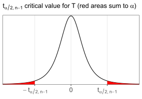

13 Means
Now let’s look at a means-type interference setup, where we apply a normal model to sample means to infer about an underlying true mean in the population. We will divide this into two broad scenarios again:
One-mean scenario, where there is a single mean of interest from a single population, and
-
Two-means scenario, where there are two means of interest that we seek to compare. This time, we will subdivide this into additional sub-cases:
Paired case, where the two samples have a natural one-to-one correspondence and are more akin to paired or repeat observations from the same population, vs
Unpaired case, where the two samples are in fact two independent samples drawn from two independent populations, each with its own mean.
A means-type inference approach using a normal model is only appropriate if your sample consists of either 1 or 2 samples where, for each sample, your data are numeric values and are at least approximately normal-looking.
13.1 T-distribution
In a moment we will delve into notation and examples for means inference, but first let’s discuss the t-distribution.
In the proportions inference section, recall we generally know \(n\) and only need to infer \(p\), and once \(p\) has been estimated or hypothesized, both the expectation and variance of the resulting binomial distribution are determined, since they’re both direct functions of \(p\).
For normal distributions, you generally start off not knowing either \(\mu\) or \(\sigma\), and furthermore it can be shown that the corresponding sample statistics \(\bar x\) and \(s\) are in fact totally statistically independent of each other 43.
The implication of this is even though usually we’re primarily interested on doing inference on just mean(s), we also need to separately estimate the standard deviation in order to “pin down” a specific version of the normal. In other words, we generally use LLN to both estimate \(\bar x\to\mu\) and \(s\to\sigma\).
However, this leads to another problem, which is sometimes \(s\) will underestimate \(\sigma\) (and sometimes it may overestimate), and this distorts the result reference distribution (use for both intervals and testing) slightly away from the standard normal, especially for small samples. Instead, we use a different reference distribution: the t-distribution.
The student’s t-distribution, as it’s formally called, has a complex PDF which we won’t show but has a simple motivation: it models the distribution of a normalized sample mean when the true \(\sigma\) is unknown (similar to how in the proportions section, the normal models the distribution of a sample proportion).
The t-distribution has a single parameter called the degrees of freedom, or sometimes \(\nu\), that must be positive, and usually an integer, although technically any real number is allowed. It sounds fancy, but it’s just a parameter like any other, i.e. it’s a number in a formula that determines the exact shape of the distribution, just like \(\mu\) or \(p\).
Here’s a plot of the t-distribution for various degrees of freedom:
library(tidyverse) ; library(plotly)
n <- 101 ; xl <- 4
tdist <- tibble(
df = rep(c(1:10,12,14,16,18,20,25,30,35,40,50,60,80,100,Inf),each=n),
x = rep(seq(-xl,xl,length.out=n),length(unique(df))),
T = dt(x,df),
N = dnorm(x)) %>% pivot_longer(3:4, names_to = "dist", values_to = "y")
plot_ly(tdist, type = "scatter", x = ~x, y = ~y, frame = ~df, color = ~dist, mode = "lines") %>%
config(displayModeBar = FALSE) %>%
layout(title = list(text = "T-distribution with various degrees of freedom vs Normal(0,1)", x = .05),
margin = list(l = 10, r = 10, b = 50, t = 50), dragmode=FALSE) %>% animation_opts(frame = 100) %>%
animation_slider(currentvalue = list(font = list(color = "#444444")))A few key facts that hopefully are intuitive after examining the plot:
Conceptually, t-distributions are basically a standard normal distribution (Z) except modified to have “heavier tails”
-
The lower the degrees of freedom, the bigger the modification, i.e. the “heavier” the tails
As \(\nu\to\infty\), the t-distribution approaches the normal
The case where \(\nu=1\) has a special name: the Cauchy distribution, and it has interesting properties (its tails are so “heavy” that it has undefined—or infinite—mean, variance, skew, and all higher moments), which makes it very useful for many counter examples, e.g. breaking the LLN or the CLT.
Similar to the normal, it’s bell-ish shaped and is symmetric about its center 0
For \(\nu>2\) it has variance \(\sigma^2=\nu/(\nu-2)\)
-
The R functions for working with the t-distribution are
dt(),pt(),qt(),rt(), just as you’d expect.- Each of these functions also demands a
dfargument for the degrees of freedom, so don’t forget to specify it when using.
- Each of these functions also demands a
13.2 One mean
13.2.1 Model notation
Now that we understand the t-distribution, let’s discuss the one-mean scenario. Suppose we draw a sample of size \(n\) observations, each of which is done independently, from an underlying normal population with underlying true mean \(\mu\) and SD \(\sigma\).
Thus, our model for the population is \(X\sim\n(\mu,\sigma)\) for some unknown, constant \(\mu\), \(\sigma\).
Let \(\bar x\) be the sample mean, and \(s\) be the sample standard deviation (as defined in sections 5.1.1 and 5.2.1). By the LLN, we know \(\bar x\to\mu\) and \(s\to\sigma\), so these are naturally our point estimates.
A few notes here that are important:
Technically the population is required to be normal, however in practice the t-based mean inference methods we’re learning are considered to be quite robust against non-normality, i.e. even moderate departures from normality are often not considered problematic.
Even though we are generally interested only in inference on \(\mu\), we still need to estimate \(\sigma\) with \(s\) in order to model the variance structure, which is generally a necessary part of inference.
So far the notation is quite intuitive, so let’s move on directly to the confidence interval formula.
13.2.2 Confidence interval
For a one-mean scenario, the confidence interval has the following form:
\[ \text{$C\%$ or $(1\!-\!\alpha)$ interval}~=~\bar x~\pm~t_{\alpha/2,n-1}\cdot\frac s{\sqrt n},~\text{ where} \]
\(\bar x=\sum x_i/n\) is the sample mean,
\(s=\sqrt{\sum(x_i-\bar x)^2/(n\!-\!1)}\) is the sample standard deviation,
-
\(t_{\alpha/2,n-1}\) is the \(\alpha\)-level critical value for a t-distribution with \(n-1\) degrees of freedom, such that \(\p(|T|>|t_{\alpha/2,n-1}|)=\p(T>t_{\alpha/2,n-1})+\p(T<-t_{\alpha/2,n-1})=\alpha\), in other words the observation on the t-distribution normal such that the two “outer-tails” defined by it and its mirror image sum to \(\alpha\) together.
library(latex2exp) df <- 3 ; xl <- 6 # pick an example df and xlimits ggplot() + geom_function(fun=\(x)dt(x,df), xlim=c(-xl,xl)) + stat_function(fun=\(x)dt(x,df), geom="area", xlim=c(-xl,qt(.025,df)), fill="red") + stat_function(fun=\(x)dt(x,df), geom="area", xlim=c(qt(.975,df),xl), fill="red") + scale_x_continuous(breaks=qt(c(.025,.5,.975),df), minor_breaks=NULL, expand=0, labels=TeX(c("$-t_{\\alpha/2,n-1}$","0","$t_{\\alpha/2,n-1}$"))) + scale_y_continuous(breaks=NULL, limits=c(0,dt(0,df)*1.01), expand=0) + theme(axis.text.x=element_text(size=13)) + labs(x=NULL, y=NULL, title=TeX("$t_{\\alpha/2,n-1}$ critical value for T (red areas sum to $\\alpha$)"))This is similar to \(z_{\alpha/2}\) for the proportion, except due to the heavier tails of the t-distribution, this value is always higher, i.e. \(t_{\alpha/2,n-1}>z_{\alpha/2}\) for all \(n\). However, as \(n\to\infty\), this approaches the normal critical value, similar to how as \(n\to\infty\) the t-distribution approaches the normal.
Also note the degrees of freedom is always \(n-1\), or one less than the sample size. An interesting interpretation of this is that in order to do anything meaningful inference-wise, without running into Cauchy-related issues, we generally need \(n\ge3\).
To compute the critical value, we use
qt(), taking care to remember to always specify thedfargument:# suppose we have a sample of size n=6, and we use the common alpha n <- 6 ; alpha <- 0.05 # the corresponding n-1 df alpha/2 t-critical value qt(1-alpha/2, n-1)[1] 2.570582- and finally, \(\se(\bar x)=s/\sqrt n\) is the estimated standard error of \(\bar x\). In a perfect world where we know \(\sigma\) we could use that instead of \(s\), which reverts the reference distribution back to a normal instead of t–, but this is not usually the case.
Suppose we have the following dataset of \(n=15\) masses in grams of ball bearings manufactured by a factory machine that should be calibrated to a mean mass of \(\mu=12\) grams.
bearings <- c(11.77, 11.83, 11.88, 12.00, 11.95, 11.96, 11.77, 11.91,
11.80, 12.09, 12.20, 11.85, 11.86, 12.18, 11.99)
bearings [1] 11.77 11.83 11.88 12.00 11.95 11.96 11.77 11.91 11.80 12.09 12.20 11.85 11.86
[14] 12.18 11.99
n <- length(bearings) # define our sample sizeSince we have \(n=15\) observations, we require a t-distribution with \(\nu=14\) degrees of freedom; we can also compute our sample mean and SD:
mean(bearings)[1] 11.936
sd(bearings)[1] 0.1369463
qt(0.975, df=14)[1] 2.144787Putting it all together, here’s out 95% confidence interval for the true mean \(\mu\) based on our sample:
[1] 11.86016 12.01184Thus, our 95% interval for the true mean is (11.86,12.01). In other words, we are 95% confident the true mean mass of ball bearings produced by this machine is between 11.86 and 12.01 grams.
13.2.3 T-test
The one-mean hypothesis test, more commonly simply called the t-test, starts with the following familiar form of hypotheses:
\[ H_0:\mu~=~\mu_0\,~~~~~~~\\ ~~~~~~~\,H_a:\mu~<,\,\ne,\,\text{or}>~\mu_0 \]
where \(\mu_0\) is the hypothesized true mean under the null. Under the null, the sample mean \(\bar x\) is distributed normally:
\[ \bar x\sim N(\mu_0,\sigma/\!\sqrt n) \]
As discussed previously, we estimate \(s\to\sigma\) out of necessity, which means the following test statistic \(t_\obs\) adopts a t-distribution with \(\nu=n-1\) degrees of freedom:
\[ t_\obs=\frac{\bar x-\mu_0}{s/\!\sqrt n}~\sim~T_{n-1} \]
Then, again, it’s simply a matter of taking the appropriate tail area.
Continuing with the ball bearing example above, suppose we wish to test if the machine is properly calibrated for \(\mu=12\) grams. Let’s use the two-sided hypothesis here, since if it’s miscalibrated on either side (too high or too low), we probably want to recalibrate it.
\[ H_0:\mu=12\\ H_a:\mu\ne12 \]
We can compute our test statistic:
[1] -1.809987Then, we compute our p-value, remembering to take twice the outer tail:
2 * pt(t_obs, df=n-1)[1] 0.09181049We can see our p-value here is not less than the standard \(\alpha=0.05\), so here we do not reject the null. In other words, there’s insufficient evidence to suggest the machine is miscalibrated, so there’s no need to recalibrate it.
13.2.4 R method
In R, you can compute both the one-mean interval and t-test using the t.test() function, which has the following important arguments:
xis the vector of observations,alternativeis the alternative direction (if doing a t-test), and again can be either"two.sided"(the default) or"greater"or"less"muis the hypothesized \(\mu_0\) under the nullconf.levelis the desired confidence (if doing an interval) which also defaults to 95%.
Continuing again with the ball bearings example, below are the 95% confidence interval for the true mean, as well as the t-test for testing \(\mu=12\) vs \(\mu\ne12\).
t.test(bearings, mu=12, conf.level=0.95, alternative="two.sided")
One Sample t-test
data: bearings
t = -1.81, df = 14, p-value = 0.09181
alternative hypothesis: true mean is not equal to 12
95 percent confidence interval:
11.86016 12.01184
sample estimates:
mean of x
11.936 We can see both the interval and p-value match our earlier computations.
13.3 Two samples – Paired
For the two-means scenario, we start by considering the paired case.
Suppose our data consists of \(n\) independent pairs of comparable observations (i.e. can be differenced), and we are primarily interested on inference on the differences between the pairs. In this case, we don’t separately model the observations in each pair as coming from a different independent distribution; we instead model the differences as a sample drawn from a population of possible differences and run inference on it.
This case is quite common in the real world, e.g. before vs after measurements for some treatment, measurements on twins, left vs right side measurements on a single individual, etc. In all these cases, differencing the pairs of observations can help control for certain additional unobserved pair-to-pair confounders.
The key thing to remember for paired data is this: it’s completely equivalent to the previously discussed one-sample T-based methods on the vector of differences!
A small study was done to test the effectiveness of a new diet on lowering cholesterol levels. Below is the before and after data for \(n=9\) subjects.
| Subject | A | B | C | D | E | F | G | H | I |
|---|---|---|---|---|---|---|---|---|---|
| Before | 209 | 210 | 205 | 198 | 216 | 217 | 238 | 240 | 222 |
| After | 199 | 207 | 189 | 209 | 217 | 202 | 211 | 223 | 201 |
Find a 95% confidence interval for the change in cholesterol after the diet. Also run a hypothesis test at the standard significance level to test if there was a significant decrease in cholesterol levels.
First, let’s load in the dataset and compute the changes. Note the changes should be differenced as after–before, not the other way around!
before <- c(209, 210, 205, 198, 216, 217, 238, 240, 222)
after <- c(199, 207, 189, 209, 217, 202, 211, 223, 201)
diff <- after - before
diff[1] -10 -3 -16 11 1 -15 -27 -17 -21
n <- length(diff)Now, we can simply apply our one-mean methods from the previous section! Here’s the 95% confidence interval, manually and using R:
[1] -19.895310 -1.660246
t.test(diff, conf.level=0.95)
One Sample t-test
data: diff
t = -2.7259, df = 8, p-value = 0.02601
alternative hypothesis: true mean is not equal to 0
95 percent confidence interval:
-19.895310 -1.660246
sample estimates:
mean of x
-10.77778 For a hypothesis test, we choose \(~H_0\!:\!\mu\!=\!0~\) vs \(~H_a\!:\!\mu\!<\!0~\) where \(\mu\) represents the true average change in cholesterol levels resulting from the diet. Then, we can compute out t-statistic and p-value, and also check using R:
[1] -2.725913
pt(t_obs, df=n-1)[1] 0.01300485
t.test(diff, mu=0, alternative="less")
One Sample t-test
data: diff
t = -2.7259, df = 8, p-value = 0.013
alternative hypothesis: true mean is less than 0
95 percent confidence interval:
-Inf -3.425454
sample estimates:
mean of x
-10.77778 Alternatively, you can also give both the after and before vectors to t.test() separately as the x and y arguments, and set the argument paired = TRUE, which will result in the exact same results. Note by default R will always take the difference of the arguments in the order first–second.
# 95% confidence interval
t.test(after, before, paired=TRUE, conf.level=0.95)
Paired t-test
data: after and before
t = -2.7259, df = 8, p-value = 0.02601
alternative hypothesis: true mean difference is not equal to 0
95 percent confidence interval:
-19.895310 -1.660246
sample estimates:
mean difference
-10.77778
# hypothesis test
t.test(after, before, paired=TRUE, mu=0, alternative="less")
Paired t-test
data: after and before
t = -2.7259, df = 8, p-value = 0.013
alternative hypothesis: true mean difference is less than 0
95 percent confidence interval:
-Inf -3.425454
sample estimates:
mean difference
-10.77778 Either way, we can see everything agrees.
13.4 Two samples – Unpaired
Next, we consider the unpaired case, also called the two independent samples case.
13.4.1 Model notation
For this case, suppose we draw samples of size \(n_1\), \(n_2\) from two different normal populations with means \(\mu_1\), \(\mu_2\) and SDs \(\sigma_1\), \(\sigma_2\), and again we assume everything is independent (both within and between the two samples).
Thus our models for the two populations are \(X_1\sim\n(\mu_1,\sigma_1)\), \(X_2\sim\n(\mu_2,\sigma_2)\) where all the mean & SD parameters are unknown constants.
Let \(\bar x_1\), \(\bar x_2\) be the sample means and \(s_1\), \(s_2\) be the sample SDs. Again by the LLN, we know \(\bar x_i\to\mu_i\) and \(s_i\to\sigma_i\).
For a two-means scenario, generally our goal is to run inference on the difference of the underlying population means \(\mu_1-\mu_2\). We think of this as our parameter of interest.
For this parameter, our point estimate naturally is the difference of our sample means \(\bar x_1-\bar x_2\).
Similar to the one-mean scenario, this scenario is not sensitive to non-normality in the data, and the t-distribution will be necessary again since we estimate \(s_i\to\sigma_i\)
For an example dataset here, let’s use this dataset from Kevin Young’s 2004 Science article on the flat-tailed horned lizard. In a study, scientists collected two samples: lizards of the species who were alive, and those that were killed by loggerhead shrikes, a common predator. In each sample, lizard horn lengths were measured to see if there was evidence that longer horns provided better defense and thus chances of survival against the shrikes. The data is in lizards.tsv.
# remember to load packages and set any desired options
# read in data and summarize to groups (lengths are in mm)
lizards <- read_tsv("https://bwu62.github.io/stat240-revamp/data/lizards.tsv")
lizards# A tibble: 184 × 2
hornLength survival
<dbl> <chr>
1 25.2 Living
2 26.9 Living
3 26.6 Living
4 25.6 Living
5 25.7 Living
# ℹ 179 more rows
lizards_summary <- lizards %>%
group_by(survival) %>%
summarize(n = n(), mean = mean(hornLength), sd = sd(hornLength))
lizards_summary# A tibble: 2 × 4
survival n mean sd
<chr> <int> <dbl> <dbl>
1 Killed 30 22.0 2.71
2 Living 154 24.3 2.63Let sample 1 be the shrike-killed lizards, and sample 2 be the living lizards. Then we have \(n_1=30\), \(n_2=154\), \(\bar x_1=22.0\), \(\bar x_2=24.3\), \(s_1=2.71\), \(s_2=2.63\).
13.4.2 Welch method
These days, the generally recommended method of inference is the Welch method for interval and testing, also sometimes called the unequal variance method, although this is a slight misnomer. The Welch method doesn’t assume \(\sigma_1\), \(\sigma_2\) are unequal, it just doesn’t assume they are equal. This is opposed to the now outdated recommendation to look at \(s_1\), \(s_2\) and choose between this and the equal-variance method, also called the two-sample t-test, which does assume equality of variances (more on this later).
Again, it’s now generally recommended to default to the Welch method, which is presented below.
The Welch method models uses a t-based method to model the sample difference in means. The main equation of interest here is the degree of freedom equation, known as the Satterthwaite approximation:
\[ \nu=\frac{\left(s_1^2/n_1+s_2^2/n_2\right)^2}{\frac{(s_1^2/n_1)^2}{n_1-1}+\frac{(s_2^2/n_2)^2}{n_2-1}} \]
This gives the approximate degrees of freedom that are relevant for both the Welch-based interval and t-test. Note this result is generally not an integer, which is perfectly fine to use in R, however if you ever need to round it to an integer (e.g. to use with a t-table), it must always be rounded down not up.
Additionally, the standard error of the sample mean difference, which this time will be used as-is in both the interval and testing equations is:
\[ \se(\bar x_1-\bar x_2)=\sqrt{\frac{s_1^2}{n_1}+\frac{s_2^2}{n_2}} \]
With these in hand, the confidence interval equation is:
\[ \text{$C\%$ or $(1\!-\!\alpha)$ interval}~=~(\bar x_1-\bar x_2)~\pm~t_{\alpha/2,\,\nu}\cdot\sqrt{\frac{s_1^2}{n_1}+\frac{s_2^2}{n_2}},~\text{ where} \]
\(\bar x_1-\bar x_2\) is our point estimate of the true difference \(\mu_1-\mu_2\),
\(t_{\alpha/2,\,\nu}\) is the \(\alpha\)-level t-distribution critical value with \(\nu\) degrees of freedom,
and \(\se(\bar x_1-\bar x_2)=\sqrt{s_1^2/n_1+s_2^2/n_2}\) is the standard error for the difference in sample means.
In a similar fashion, for the Welch t-test, we test the following hypotheses:
\[ H_0:\mu_1-\mu_2~=~d\,~~~~~~~\\ ~~~~~~~\,H_a:\mu_1-\mu_2~<,\,\ne,\,\text{or}>~d \]
The test statistic is computed as:
\[ t_\obs=\frac{(\bar x_1-\bar x_2)-d}{\sqrt{\frac{s_1^2}{n_1}+\frac{s_2^2}{n_2}}}~\sim~T_\nu \]
which follows a t-distribution again with \(\nu\) degrees of freedom.
Continuing with the lizards example from earlier, let’s compute a 95% confidence interval for the true difference \(\mu_1-\mu_2\), and also run an \(\alpha=0.05\) level test to see if indeed the living lizards tended to have longer horn lengths. Recall the earlier data summary:
lizards_summary# A tibble: 2 × 4
survival n mean sd
<chr> <int> <dbl> <dbl>
1 Killed 30 22.0 2.71
2 Living 154 24.3 2.63Let’s start by computing \(\nu\):
n1 <- lizards_summary$n[1] ; n2 <- lizards_summary$n[2]
s1 <- lizards_summary$sd[1] ; s2 <- lizards_summary$sd[2]
df <- (s1^2/n1+s2^2/n2)^2 / ((s1^2/n1)^2/(n1-1)+(s2^2/n2)^2/(n2-1))
df[1] 40.37206Now we can compute the 95% confidence interval:
[1] -3.381912 -1.207092For the hypothesis test, it makes sense here to choose \(~H_0\!:\!\mu_1\!=\!\mu_2~\) vs \(~H_a\!:\!\mu_1\!<\!\mu_2~\). Then, we can compute our test statistic and p-value:
[1] -4.26337
pt(t_obs, df)[1] 5.888765e-05So it seems like the killed lizards do have significantly shorter horns than the alive ones. We can also check all of these using t.test(), simply give both vectors to the function with the appropriate additional arguments if necessary.
# extract two samples as vectors
killed <- lizards %>% filter(survival == "Killed") %>% pull(hornLength)
living <- lizards %>% filter(survival == "Living") %>% pull(hornLength)
# 95% confidence interval
t.test(killed, living, conf.level=0.95)
Welch Two Sample t-test
data: killed and living
t = -4.2634, df = 40.372, p-value = 0.0001178
alternative hypothesis: true difference in means is not equal to 0
95 percent confidence interval:
-3.381912 -1.207092
sample estimates:
mean of x mean of y
21.98667 24.28117
# hypothesis test statistic
t.test(killed, living, mu=0, alternative="less")
Welch Two Sample t-test
data: killed and living
t = -4.2634, df = 40.372, p-value = 5.889e-05
alternative hypothesis: true difference in means is less than 0
95 percent confidence interval:
-Inf -1.388469
sample estimates:
mean of x mean of y
21.98667 24.28117 13.4.3 Two-sample T-test
The now slightly old-fashioned alternative to the Welch method is the two-sample T-test, also sometimes referred to as the equal variance T-test, since it requires the additional assumption that \(\sigma_1=\sigma_2\). Of course this doesn’t mean \(s_1\), \(s_2\) must be exactly equal in the sample, just that they are close (usually if they’re within a factor of 2 of each other, i.e. \(0.5<s_1/s_2<2\) this is considered plausible).
As previously mentioned, in the modern statistical zeitgeist, it’s generally preferred to default to the Welch test unless it’s a clear foregone conclusion that \(\sigma_1=\sigma_2\). However, the two-sample T-test does still appear often enough in texts, sources, interview problems, and the collective consciousness of data scientists that I think it’s worth a brief discussion.
This time the degree of freedom equation is much simpler:
\[ \nu=n_1+n_2-2 \]
However, what we gain in simplicity therein is lost again in the more complex formula for the standard error of the sample mean difference:
\[ \se(\bar x_1-\bar x_2)=s_p\sqrt{\frac1{n_1}+\frac1{n_2}}~,~~\text{where}\\ ~~\text{“pooled” SD}~s_p=\sqrt{\frac{s^2_1(n_1-1)+s^2_2(n_2-1)}{n_1+n_2-2}} \]
The formula for \(s_p\) essentially adds the corresponding sum-squared-differences of each observation from its own sample mean \(s^2_i(n_i-1)\), before re-dividing by the combined degrees of freedom across both samples \(n_1+n_2-2\), then taking the root to get a combined or “pooled” SD estimate across both samples, which makes sense since we assumed \(\sigma_1=\sigma_2\), so it doesn’t make sense to have two separate SD estimates for the samples.
With these in hand, the confidence interval equation is:
\[ \text{$C\%$ or $(1\!-\!\alpha)$ interval}~=~(\bar x_1-\bar x_2)~\pm~t_{\alpha/2,\,\nu}\cdot s_p\sqrt{\frac1{n_1}+\frac1{n_2}} \]
And the test statistic for \(~H_0\!:\!\mu_1\!-\!\mu_2\!=\!d~\) vs \(~H_a\!:\!\mu_1\!-\!\mu_2\!<,\ne,>\!d~\) is:
\[ t_\obs=\frac{(\bar x_1-\bar x_2)-d}{s_p\sqrt{\frac1{n_1}+\frac1{n_2}}}~\sim~T_\nu \]
which again follows a t-distribution again with \(\nu\) degrees of freedom.
Continuing again with the lizards example, recall the data summary:
lizards_summary# A tibble: 2 × 4
survival n mean sd
<chr> <int> <dbl> <dbl>
1 Killed 30 22.0 2.71
2 Living 154 24.3 2.63Our \(s_1\), \(s_2\) are well within a factor of two of each other, so we can apply the two-sample t-test without concern. Again, let’s compute a 95% confidence interval and an \(\alpha=0.05\) level hypothesis test to see if the living lizards had longer horns.
# compute the degrees of freedom and pooled SD
df <- n1+n2-2
df[1] 182
sp <- sqrt((s1^2*(n1-1)+s2^2*(n2-1))/df)
sp[1] 2.643476
# 95% confidence interval
-diff(lizards_summary$mean) + c(-1,1) * qt(0.975, df) * sp * sqrt(1/n1+1/n2)[1] -3.335402 -1.253602[1] -4.349358
pt(t_obs, df)[1] 1.135079e-05We can check our work with t.test() again, this time setting var.equal = TRUE to force the equal variance version of the test:
# 95% confidence interval
t.test(killed, living, conf.level=0.95, var.equal=TRUE)
Two Sample t-test
data: killed and living
t = -4.3494, df = 182, p-value = 2.27e-05
alternative hypothesis: true difference in means is not equal to 0
95 percent confidence interval:
-3.335402 -1.253602
sample estimates:
mean of x mean of y
21.98667 24.28117
# hypothesis test
t.test(killed, living, mu=0, alternative="less", var.equal=TRUE)
Two Sample t-test
data: killed and living
t = -4.3494, df = 182, p-value = 1.135e-05
alternative hypothesis: true difference in means is less than 0
95 percent confidence interval:
-Inf -1.422321
sample estimates:
mean of x mean of y
21.98667 24.28117 Everything agrees and we are content.